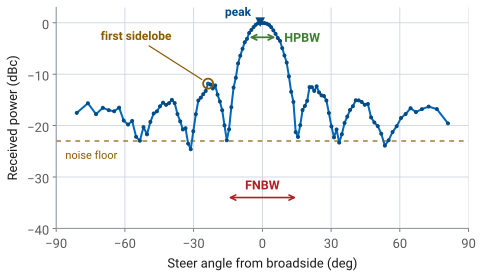

L20 - Array Factor and Beamwidth#
Array Factor and Beamwidth
The aperture measured in wavelengths, \(Nd/\lambda\), sets the beamwidth, and steering widens it by \(1/\cos\theta_0\).
Lesson 20 · Antennas, Phased Arrays, and Radar Systems · Dr. Neil Rogers
Printing
To print the slides, switch to present mode and print: one slide a sheet, with room for notes. Print from read mode for the whole lesson.
Learning Objectives
- I can derive the array factor for an arbitrary linear array and apply pattern multiplication.
The Uniform Array Factor
It gives the L18 Lab beam: 13° wide at boresight, wider at 45°.
We find beamwidth, nulls, sidelobes, and directivity, then read them off the L20 Lab sweep.
Your midterm project measured these from a pattern cut.
The Antenna Pattern Measurement midterm project, assigned in Lesson 9, measured all of this from the other direction. The quantities you extracted from a measured cut — the half-power width, the null positions, the sidelobe level referenced to the peak — are exactly the quantities this lesson computes from theory, so keep your project data at hand.
In the L18 Lab you swept the beam across the room and watched it widen as it went. The main lobe was about 13° across at boresight and noticeably wider at 45°, with sidelobes that moved with the beam. Lesson 16 gave us the closed form that produces all of that. This lesson takes numbers from it: the half-power beamwidth of a steered array, the angle of every null, the first sidelobe level, and the directivity, and then runs the beamwidth result in reverse to size an array from a specification. The central result is that the aperture in wavelengths, \(Nd/\lambda\), sets the beamwidth. The L20 Lab tests it on your kit by halving the active aperture twice, so the last part of this lesson covers that experiment and how to read the kit’s sweep, and the Pre-Lab at the end lists the predictions you bring to class.
Lesson 16 summed \(N\) equal-amplitude elements with a progressive phase and collapsed the geometric series into the normalized uniform array factor
Everything about the shape of the pattern is in that one function of \(\psi\). The array’s physical parameters enter only through the map from angle to \(\psi\), and the beam peak is wherever \(\psi\) = 0, which is \(\theta = \theta_0\).
The Sinc Near the Peak
Near the peak \(\psi\) is small, so \(\sin(\psi/2) \approx \psi/2\).
The array is a sampled aperture of length \(L = Nd\), and this is L6’s uniform line-source pattern.
Near the peak, \(\psi\) is small, so \(\sin(\psi/2) \approx \psi/2\) and
That is the same \(\sin u / u\) we found in Lesson 6 for a uniform line source, and the reason is physical: an \(N\)-element uniform array with spacing \(d\) is a sampled aperture of length \(L = Nd\). Near the peak, where the sampling is too fine to matter, the array’s pattern matches the continuous aperture’s. The length is \(Nd\) rather than the \((N-1)d\) between the end elements because each element accounts for one spacing \(d\) of aperture, the sampled line source of Lesson 16.
Half-Power Beamwidth
\(\sin\theta\) has slope \(\cos\theta_0\) at the beam, so the width in angle grows by \(1/\cos\theta_0\).

Power is half the peak where \(\lvert \sin u/u\rvert = 1/\sqrt{2}\), which happens at \(u\) = 1.392. Solving outward from there:
The last step fixes the half-power width in \(\sin\theta\), and that width is the same at every scan angle, because the array factor depends only on \(\sin\theta - \sin\theta_0\). The scan angle enters when we convert it back to an angle. The derivative of \(\sin\theta\) is \(\cos\theta\), so near the beam peak the first term of its Taylor series gives
At broadside \(\sin\theta\) is steepest, with slope 1, and a step in \(\sin\theta\) is the same step in angle. Toward the horizon \(\sin\theta\) flattens, and the same step in \(\sin\theta\) covers more angle: at 60° the slope is 0.5, so the beam is twice as wide. The figure shows the course array’s half-power band in \(\sin\theta\) mapped back to angle at both scan angles. For a beam that is narrow compared with its distance from broadside, the half-width is
and the full width is twice that:
The aperture measured in wavelengths, \(Nd/\lambda\), sets the beamwidth. The constant 0.886 is the uniform line-source constant from Lesson 6 and Lesson 15, unchanged, because a uniform array of length \(Nd\) is that line source sampled at \(N\) points. Steering off broadside foreshortens the aperture as seen from the beam direction, and the beam widens by \(1/\cos\theta_0\).

The same factor has a physical reading, shown in Lesson 18’s figure: seen from the beam direction, the array’s projected length is \(Nd\cos\theta_0\), and a shorter aperture gives a wider beam.
Scan Broadening of the Course Array

\(N\) = 8, \(d\) = 14 mm, worked at 10.0 GHz: \(Nd\) = 3.73 \(\lambda\).
The rule gives 13.6° at broadside (13.7° exact) and 15.7° at 30°.
At 60° the rule gives 27.2° and the pattern 31.9°.
Worked example — the PHASER array
The course array has \(N\) = 8 patches on \(d\) = 14 mm centers. We work this example at 10.0 GHz, below every kit’s HB100, so it shows the method without giving any Part 1 answer; Part 1 has you work at your own kit’s frequency. At 10.0 GHz, \(\lambda\) = 30.0 mm, so \(d/\lambda\) = 0.467 and the aperture is \(Nd\) = 112 mm = 3.73 \(\lambda\).
Broadside: \(\theta_\text{HP}\) = 0.886/3.73 = 0.237 rad = 13.6° by the rule, against 13.7° from the exact pattern.
Steered to 30°: 13.6°/cos 30° = 15.7°, against 15.9° from the pattern.
Steered to 45°: 13.6°/cos 45° = 19.2°.
Steered to 60°: the formula gives 27.2°, while the pattern itself is 31.9° wide. The small-angle step above is the approximation that fails, and it underestimates the width — a wide-scanned beam is always wider than \(0.886\lambda/(Nd\cos\theta_0)\) predicts.
Beamwidth Explorer
The widget draws the uniform array factor for any element count, spacing, and steering angle. Set \(N\) and \(d/\lambda\) and watch the main lobe narrow as the aperture grows; the green bar is the half-power width read off the pattern and the dotted bar underneath is what \(0.886\lambda/(Nd\cos\theta_0)\) predicts. Steer toward ±60° and two things happen at once: the beam widens, and the dotted bar falls short of the real one. Push \(d/\lambda\) toward 1.0 with the beam steered and a grating lobe enters from the edge of visible space.
Null Locations
Equal 0.268 steps in \(\sin\theta\) become 15.5°, 16.9°, 21.1° in angle; the fourth null has no real angle.

A null is a zero of the numerator that is not also a zero of the denominator. The numerator vanishes when
except when \(m\) is a multiple of \(N\), because then \(\sin(\psi/2)\) vanishes as well and the ratio returns to unity. Those are the main lobe and its repeats, the grating lobes of Lesson 23, not nulls. Converting through \(\psi = kd(\sin\theta - \sin\theta_0)\):
The nulls are equally spaced in \(\sin\theta\), not in \(\theta\). The figure plots the same broadside pattern twice. The top panel uses \(\sin\theta\) as its axis, and there the nulls are a comb with teeth every \(\lambda/Nd\) = 0.268. The bottom panel uses angle, and the dashed lines carry each null down to it: the gaps grow from 15.5° to 16.9° to 21.1°, because \(\sin\theta\) flattens toward the horizon, the same slope argument that widened the steered beam. A null exists only if the right-hand side lands inside the visible region \(\lvert \sin\theta\rvert\) ≤ 1; values outside it correspond to no real direction, and there is no null.
Taking \(m\) = 1 on both sides of a broadside beam gives the first-null beamwidth
Anatomy of a Uniform-Array Pattern

\(\lambda/Nd\) = 0.268: nulls at 15.5°, 32.4°, and 53.5°; the fourth falls outside the visible region.
FNBW is 31.1°, about 2.3 times the half-power width.
The nulls are sharp, so a coarse sweep can miss them.
Worked example — nulls of the course array
With \(Nd/\lambda\) = 3.73, the tooth spacing is \(\lambda/Nd\) = 0.268 in \(\sin\theta\). Broadside, the nulls sit at
\(\sin\theta\) = 0.268 → 15.5°, 0.536 → 32.4°, 0.804 → 53.5°, \(\quad 1.071 \rightarrow\) outside the visible region.
So the eight-element array shows three nulls per side, not seven, and FNBW = 2(15.5°) = 31.1°. Steer the same array to 30° and the first nulls land at \(\sin\theta\) = 0.5 ± 0.268, which is 13.4° and 50.2°. The beam is no longer symmetric about its own peak: the lower null sits 16.6° below it and the upper null 20.2° above, for a first-null beamwidth of 36.7°.
The null-to-null width runs about 2.3 times the half-power width for a uniform array. Use that ratio as a check when you read a measured sweep: the nulls are sharp features that a coarse angle grid can miss entirely, while the half-power points are easy to interpolate.
Sidelobe Level
Beamwidth and null positions scale with \(Nd/\lambda\); the sidelobe level does not. A uniform array holds its first sidelobe near −13 dB at 8 elements or 800. L22’s taper lowers it and widens the beam.
The −13 dB figure is the large-\(N\) limit, and a small array lands a little higher: eight elements land a few tenths of a decibel above it, and fewer elements land higher still. To find the level for a given \(N\), note that the first sidelobe peaks close to midway between the first two nulls, at
and evaluate \(AF_N\) there. That estimate lands within 0.2 dB of the true peak for eight elements and closer for fewer.
Worked example — the first sidelobe of six elements
With \(N\) = 6, the estimate puts the first sidelobe at \(N\psi/2 = 3\pi/2\), so \(\psi/2 = \pi/4\) and
In decibels that is \(20\log_{10}(0.236) = -12.6\) dB. Searching the array factor between its first two nulls puts the true peak at \(N\psi/2 = 1.44\pi\) and −12.4 dB, so the estimate is close enough to use. Neither the frequency nor the spacing enters, because \(AF_N\) depends on them only through \(\psi\); they move the sidelobe in angle, not in level, as long as it lands inside the visible region.
Directivity of a Uniform Array
Peak: the \(N\) fields add in phase, so \(\lvert AF\rvert^2\) = \(N^2\).
Average over the sphere: \(N\) at \(d = \lambda/2\), so \(D = N\).
Doubling \(N\) adds 3 dB by halving the beamwidth.
Lesson 2 defined directivity as the peak radiation intensity over its average over the sphere, \(D = 4\pi U_\text{max}/P_\text{rad}\). For an array of isotropic elements the intensity follows \(\lvert AF\rvert^2\), so we need its peak and its average. Write the unnormalized array factor as a sum over elements, with \(\gamma\) the angle from the array axis (so \(\cos\gamma = \sin\theta\) in the plane of the array), and multiply it by its conjugate:
At the peak every term is 1, so the peak of \(\lvert AF\rvert^2\) is \(N^2\): the \(N\) fields add in phase. The average over the sphere goes term by term. A term with \(m = n\) is 1 everywhere. A cross term averages to a sinc of the separation \(x = d(m-n)\):
The ratio is the directivity:
At \(d = \lambda/2\) every cross term contains \(\sin(\pi(m-n))\), which is zero, and the double sum collapses to the \(N\) diagonal terms:
Written in that last form, the result carries over to other spacings: for any uniform broadside array with \(d\) below a wavelength,
which is the long uniform line-source directivity from Lesson 6 with \(L = Nd\) — the same sampled-aperture argument that produced the 0.886. Directivity grows linearly with aperture in wavelengths. Doubling the element count at fixed spacing doubles \(D\) and adds 3 dB, and it does so by halving the beamwidth, not by making any element radiate harder.
Directivity of the Course Array
The center four alone give 5.7 dB, 3 dB less, and twice the beamwidth.
Steering widens the beam but holds \(D\) near 8.7 dB; scan loss comes from the element (L18).
Worked example — directivity of the course array
\(D\) ≈ 2(8)(0.467) = 7.5, or \(10\log_{10}(7.5)\) = 8.7 dB at 10.0 GHz. Turning off four elements to leave the center four gives \(D\) ≈ 3.73 = 5.7 dB, exactly 3 dB less, and doubles the beamwidth.
The eight elements are patches, not isotropic radiators, so the array’s gain is the element gain plus the array gain. Pattern multiplication becomes addition in dB:
Eight half-wave dipoles, at 2.15 dBi each, would make a 10.9 dBi array. The sum holds while the element pattern is close to flat across the main lobe.
Directivity under steering. The array-factor directivity of a linear array barely changes as you steer, even though the beam visibly widens. The main lobe of a linear array is a cone about the array axis; steering off broadside thickens the cone wall by \(1/\cos\theta_0\) and shrinks its circumference by \(\cos\theta_0\), leaving the solid angle nearly unchanged. For the course array at 10.0 GHz the array-factor directivity is 8.74 dB at broadside, 8.82 dB at 45°, and 9.03 dB at 60°. The scan loss you measure on real hardware comes from the element pattern, not from the array factor, which is why the PHASER loses gain toward the edges of its scan volume, as Lesson 18 measured.

Designing to a Beamwidth
Sample requirement: \(\theta_\text{HP}\) ≤ 5° at 10 GHz, scan ±45°.
Step |
Result |
|---|---|
Aperture |
\(Nd\) = 305 mm = 10.2 \(\lambda\) |
Spacing (L23) |
\(d\) = \(\lambda/2\) = 15 mm |
Count |
\(N\) = 21: 4.8° broadside, 6.8° at 45° |
5° held at 45° |
\(N\) = 29: 43.5 cm, 14.6 dB |

We can run every result so far in reverse. If we fix the beamwidth and scan volume as requirements, we can design the array using the following three-step process.
Aperture. Invert the half-power formula, with \(\theta_\text{HP}\) in radians:
\[Nd = \frac{0.886\ \lambda}{\theta_\text{HP}}.\]If the specification has to hold across a scan volume, divide by \(\cos\theta_0\) at the widest scan angle, because that is where the beam is widest.
Spacing. Lesson 23 derives the condition that keeps grating lobes out of visible space:
\[d < \frac{\lambda}{1 + \lvert\sin\theta_0\rvert_\text{max}}.\]At \(d = \lambda/2\) the criterion holds for any scan angle, which is why half-wavelength spacing is the default.
Element count. \(N = Nd/d\), rounded up. Every element is an antenna, a phase shifter, an amplifier and a control line, so this is the number that sets the cost of the array.
Worked example — a 5° pencil beam at X-band
Sample requirement: \(\theta_\text{HP}\) ≤ 5° at 10 GHz, scanning to ±45°. These two numbers are an example chosen to give an array of a few dozen elements, not a requirement from a real system. At 10 GHz, \(\lambda\) = 30 mm.
Step |
Work |
Result |
|---|---|---|
Aperture for 5° broadside |
\(Nd\) = 0.886(30)/0.0873 |
305 mm = 10.2 \(\lambda\) |
Spacing for ±45° scan |
\(d\) < \(\lambda/(1+\sin 45^\circ)\) = 0.586 \(\lambda\) |
take \(d\) = \(\lambda/2\) = 15 mm |
Element count |
\(N\) = 305/15 = 20.3, round up |
\(N\) = 21, aperture 315 mm |
Broadside beamwidth |
\(0.886(30)/315\) |
4.8° |
Broadside directivity |
\(D\) ≈ 2(21)(0.5) = 21 |
13.2 dB |
Now check the corner of the scan volume. At 45° the same array gives 4.8°/cos 45° = 6.8°, which misses the specification by nearly 2°. Holding 5° at 45° requires \(Nd\) = 305/cos 45° = 431 mm, so \(N\) = 29 elements at half-wavelength spacing, a 43.5 cm aperture and 14.6 dB.
The last 45° of scan volume is what added the eight extra channels. Whether that is the right trade depends on how much of the time the beam sits out at the edge of the volume.
Halving the Active Aperture
Switch off end elements: \(Nd\) halves and the beam doubles.
The voltages add, so each halving drops the received peak.

Both beamwidth results depend on the array only through \(Nd\), the active aperture. Switching off elements at the ends of the row shortens \(Nd\) without changing \(d\), and that is the experiment the L20 Lab runs: all eight elements (E1 to E8), the center four (E3 to E6), and the center pair (E4 and E5). Each step halves \(Nd\), so both beamwidths double. The amplitude distribution stays uniform, so the first sidelobe moves only through the small-\(N\) correction in “Sidelobe Level” above.
The peak changes too, and the lab reads a received peak, not a directivity. On receive, the array adds the element voltages in phase, so the peak voltage is proportional to \(N\) and the peak power to \(N^2\). Relative to all eight elements,
which Part 1 has you evaluate for four elements and for two. Each halving loses 3 dB because half the elements collect half the power, and 3 dB because the beam’s directivity halves. The kit reads up to about 1.5 dB less than the voltage sum per halving, and up to about 3 dB less over both, consistent with it within the spread of its readings. The figure draws the three ideal patterns at 10.0 GHz.
Worked example — a six-element aperture
Turn off only E1 and E8, leaving six elements over \(Nd = 6 \times 14 = 84\ \text{mm}\). At 10.0 GHz, where \(\lambda = 30.0\ \text{mm}\), the 0.886 rule gives
and the first-null beamwidth is \(2\arcsin(30.0/84) = 2 \times 20.92^\circ = 41.8^\circ\). Solving the six-element array factor directly gives 18.4°, the value to predict; the rule’s 18.1° is within a third of one 0.96° sweep step of it. The voltage sum puts the peak \(20\log_{10}(6/8) = -2.5\ \text{dB}\) below the eight-element peak.
Two Elements Side by Side
The center pair, E4 and E5, is the smallest aperture the lab sweeps, and two of its predictions need care. With \(N = 2\) the uniform array factor reduces to
The \(0.886\ \lambda/(Nd)\) rule carries small-angle steps inside it, and the wider the beam, the worse those steps get. Because \(AF_2\) is just \(\cos(\psi/2)\), we can solve its half-power point exactly instead. Half power is where the array factor falls to \(1/\sqrt{2}\):
Worked example — the center pair at 10.0 GHz
At 10.0 GHz, \(\lambda\) = 30.0 mm and \(d\) = 14 mm, so
The rule gives \(0.886\ (30.0)/28 = 0.949\) rad \(= 54.4^\circ\), an error of \((54.4 - 64.8)/64.8 = -16.0\%\). Both small-angle steps fail here: the rule assumes \(\sin(\psi/2) \approx \psi/2\), and at the half-power point \(\psi/2 = 45^\circ\); it also assumes \(\sin\theta \approx \theta\), and there \(\theta = 32.4^\circ\).
The first-null beamwidth and the first sidelobe come from the same function. The first null of \(\cos(\psi/2)\) needs \(\psi = \pi\), which is
No real angle has a sine above 1, so this null falls outside the visible region. Across the visible region \(\psi\) runs only from \(-kd\) to \(kd\), and \(kd = 168.0^\circ\) is less than 180°, so \(\cos(\psi/2)\) falls steadily from the peak to ±90° with no null and no sidelobe.
When a pattern has no first null at any real angle, we quote its first-null beamwidth as 180°, the whole visible region, by convention, and its first sidelobe level as none. Part 1 of the packet has you evaluate \(\lambda/2d\) at your kit’s frequency and say what you entered for the two-element FNBW and first sidelobe, and why.
Two Elements, Far Apart
E1 and E8: the same two-element array factor, seven times the spacing.
Full-height lobes repeat wherever \(\psi = 2\pi m\) lands in visible space.
The fourth sweep of the lab leaves only E1 and E8 on. It is still a two-element array, so its array factor is the same \(\cos(\psi/2)\) as the E4 and E5 pair, with the spacing \(D = 98\ \text{mm}\) in place of \(d\). That one change tests the derivation on an array that is not a contiguous block, which is what “an arbitrary linear array” in the objective asks for. The full peaks sit where \(\psi = 2\pi m\), which is
and with \(D\) above a wavelength several values of \(m\) land in visible space. Those extra full-height lobes are grating lobes, which Lesson 23 treats. The lobe at 0° is narrower than the full eight-element beam. All of the weight sits at the two ends of the row, the opposite of a taper, which narrows the main lobe and sends the rest of the power into the grating lobes. The two pairs add the same two voltages, so their peaks should agree, and their beams should not.
The lobe at 0° has the same half-power and null conditions as the center pair, \(\psi = \pi/2\) and \(\psi = \pi\) (see “Two Elements Side by Side” above), with \(D\) in place of \(d\):
Each is the half-angle; the beamwidth is twice it.
Worked example — a pair five spacings apart
Leave only E2 and E7 on, so \(D = 5d = 70\ \text{mm}\). At 10.0 GHz, \(D/\lambda = 70/30.0 = 2.33\) and \(\lambda/D = 0.429\), so the full-height lobes sit at
\(m\) |
\(\sin\theta_m = m\lambda/D\) |
\(\theta_m\) |
|---|---|---|
0 |
0 |
0° |
±1 |
±0.429 |
±25.4° |
±2 |
±0.857 |
±59.0° |
±3 |
±1.29 |
outside the visible region |
That puts five full-height lobes in visible space. The lobe at 0° has
and
Its 12.3° half-power width is already narrower than the 13.7° of all eight elements at 10.0 GHz.
Part 1 has you find the lobe angles and the width of the lobe at 0° at your kit’s frequency.
Reading a Measured Sweep
The kit samples every 2.8125° of phase, about 1° near broadside.
Levels are in dBc: each reading minus its own trace’s peak.
The noise floor sits 23 dB below each trace’s peak; nulls read it.

The kit’s Rectangular tab does not plot the array factor. It plots received power against commanded steer angle: the software steps the beam past a stationary source and records the power at each step. By reciprocity that traces the array pattern, but three properties of the measurement are built into every trace.
The kit samples the sweep at discrete steps. With Use Bits on, as in every lab preset, the software steps the element-to-element phase one ADAR1000 LSB, 2.8125°, per point. One step moves \(\sin\theta\) by \(2.8125^\circ/kd = 2.8125^\circ/168.0^\circ = 0.0167\) at 10.0 GHz, which is 0.96° of angle at broadside and 1.36° at 45°, widening as \(1/\cos\theta\). A sweep is 162 points: at 10.0 GHz, 119 of them span ±81°, and the other 43 ask for more phase than any real angle needs and all plot at ±90°. The trace stands up in that column, because it shows the array factor at that extra phase; it is not a lobe at any real angle. A half-power width read as the span between the outermost samples above −3 dB comes out short by up to a step: 12.5° to 13.5° for the full array at 10.0 GHz, against 13.7° from the pattern. Interpolating between the two samples on either side of each −3 dB crossing recovers the width to within 0.1°.
Levels are in dBc: a reading minus its own trace’s peak, so 0 dB is the peak. The kit’s Peak Gain reads in dBFS and drops each time you switch elements off, so only a level taken relative to its own peak lets the eight-, four-, and two-element traces share one axis with the array factor.
The trace has a noise floor. It stops following the array factor about 23 dB below its own peak, and anything the array factor puts below that line reads as the noise floor instead. The floor follows the trace: when you switch elements off and the peak drops, the floor drops with it, so it stays about 23 dB below each trace’s peak, −23 dBc.
The nulls show both effects at once. A true null is infinitely deep and infinitely narrow, so the grid usually misses its bottom, and even a sample that lands on it reads the noise floor. A sample where the array factor has fallen to the floor’s level reads 3 dB above the noise floor, because the receiver adds the two powers. Reading each null at its lowest sample puts the measured FNBW up to one step, about 1°, wider than the array factor’s: between 31.1° and 32.1° for the full array at 10.0 GHz.
Ideal Versus Measured
The widget draws the array factor for each of the three apertures and adds the three measurement effects on a toggle: the phase-step grid, a floor 23 dB below each trace’s own peak, and receiver noise. Set the aperture, read HPBW, FNBW, and first sidelobe level off the ideal curve, then switch the measurement effects on and read the same three numbers again from the sampled trace. The eight-element FNBW holds when the grid appears, because the null sits exactly 16 phase steps out and a sample lands on it. The HPBW moves at four and two elements, and more as the aperture shrinks.
What the Sweep Shows
Feature |
Array factor |
Sweep reads |
|---|---|---|
Floor |
none |
about −23 dBc |
Nulls |
\(-\infty\) |
the noise floor |
FNBW |
from the nulls |
up to 1° wider |
First SLL |
near −13 dB |
−11 to −14 dBc |
HPBW, 2 elements |
exact |
several degrees narrow |
These are the differences between a trace and the array factor to expect in the lab.
The first sidelobe of the eight-element trace sits only about 10 dB above the floor, so the floor adds power to it and noise moves the reading a few tenths of a decibel from sweep to sweep. The two first sidelobes of one trace need not match each other either, so read a first sidelobe as a range, −11 to −14 dBc, not as a single number. The second and third sidelobes sit closer to the floor still, which is why the lab asks for the first.
A null that fills to the floor reads wide, so a four-element FNBW can come out a few degrees wider than the array factor gives.
The half-power readings get less certain as the aperture shrinks. The two-element pattern is flat near its half-power points: it falls only about 0.2 dB per degree there, against about 1 dB per degree for eight elements. An error of 0.6 dB in the level you read the −3 dB crossings against moves each crossing about 3°, and the HPBW twice that. The error is one-sided: on a flat top, the highest of several noisy samples sits above the true peak, which raises the −3 dB line and pulls both crossings in, so the two-element HPBW tends to read narrow. Expect the eight- and four-element HPBW within about a degree of your prediction, and the two-element HPBW within several degrees.
Summary: Beamwidth
Symbol / idea |
What it is |
Number to remember |
|---|---|---|
\(\psi = kd(\sin\theta - \sin\theta_0)\) |
array-factor argument |
beam peak is at \(\psi\) = 0 |
\(N\psi/2\) = 1.392 |
half-power point of \(\sin u/u\) |
the source of the 0.886 |
\(\theta_\text{HP} \approx 0.886\lambda/(Nd\cos\theta_0)\) |
beamwidth from aperture and scan |
13.6° for the course array at 10.0 GHz (13.7° exact) |
Summary: Nulls and Directivity
Symbol / idea |
What it is |
Number to remember |
|---|---|---|
\(\sin\theta = \sin\theta_0 \pm m\lambda/Nd\) |
null locations |
equally spaced in \(\sin\theta\), not \(\theta\) |
\(\text{FNBW} = 2\arcsin(\lambda/Nd)\) |
null-to-null width, broadside |
31.1° at \(N\) = 8, 10.0 GHz; about \(2.3\ \theta_\text{HP}\) |
\(D \approx 2Nd/\lambda\) |
broadside directivity, uniform array |
7.5 = 8.7 dB at \(N\) = 8, 10.0 GHz |
Summary: Gain and Array Sizing
Symbol / idea |
What it is |
Number to remember |
|---|---|---|
\(G_\text{total} = G_\text{element} + D_\text{array}\) |
pattern multiplication in dB |
add the decibels |
\(d < \lambda/(1+\lvert\sin\theta_0\rvert)\) |
spacing for a scan volume |
\(\lambda/2\) scans anywhere |
first sidelobe ≈ −13 dB |
set by the taper, not the size |
near −13 dB for large \(N\); unmoved by steering |
Looking Ahead
The L20 Lab, in class: sweep 8, 4, and 2 elements, then E1 and E8.
Lesson 21 compares this beam sweep with an azimuth sweep: one beam held still.
Every sweep in the L20 Lab steers the beam past a fixed source. Lesson 21 holds one beam still and sweeps the source around it in azimuth, the way an antenna range measures a pattern, and the L21 Lab compares the two traces.
Pre-Lab
Part 1 of the L20 Lab packet is the pre-lab. Do it before the lab period, at the HB100 frequency your kit reported in the L18 Lab, and bring it to class: you check every reading you take in Part 2 against it.
Part 1 |
You predict |
Checked in |
|---|---|---|
Question 1 |
\(\lambda\), \(d/\lambda\), \(kd\), and the sweep step at your frequency |
Steps 2 and 7 |
Question 2 |
HPBW, FNBW, first SLL, and peak change for 8, 4, and 2 elements |
Steps 7 to 9, Table A |
Question 3 |
E1 and E8: the full-height lobe angles, the width of the lobe at 0°, and the peak change |
Step 10, Tables A and B |
Question 4 |
the E1 and E8 sweep, rehearsed on the hosted simulator |
Step 10 |
The worked examples above use 10.0 GHz, below every kit, so they show the method and leave every Part 1 answer to you. “Two Elements Side by Side” and “Two Elements, Far Apart” above set up the rest.